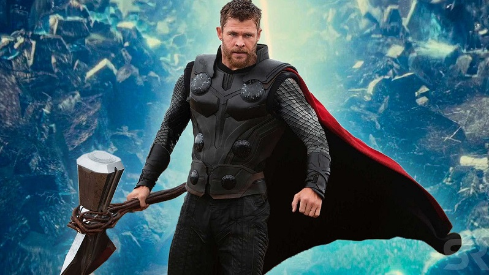

Chris Hemsworth sebagai Thor, Thor merupakan pahlawan super dari Marvel yang diciptakan oleh Stan Lee, Larry Lieber, dan Jack Kirby. Tokoh ini pertama kali muncul pada komik Journey into Mystery yang diterbitkan pada Agustus 1965. Stan Lee dkk menbuat sosok Thor terinspirasi dari mitologi Skandinavia yakni sang dewa petir.
Thor berasal dari dunia para dewa versi Marvel yang bernama Asgard. Para dewa Asgard terutama Thor dapat hidup abadi karena mengkonsumsi apel emas bernama Idunn. Ia adalah anak dari raja Odin yang merupakan pemimpin para dewa. Thor juga memiliki seorang adik bernama Loki yang ternyata merupakan anak yang diangkat oleh Odin. Pada awalnya, Thor merupakan sosok dewa yang akuh, arogan, dan egois. Karena tindakannya tersebut, raja Odin menghukumnya dengan mengirimnya ke bumi dan menghilangkan seluruh kekuatan Thor. Thor akan mendapatkan kekuatannya kembali jika dirinya sudah menyadari kesalahnnya.
Saat diasingkan di bumi, Thor bertemu dengan Jane Foster. Jane Foster lah yang menyadarkan Thor sehingga dirinya memperoleh kekuatannya kembali. Setelah kejadian itu Thor mencintai Bumi layaknya Asgard. Thor sering membantu mahluk Bumi dalam memerangi penjahat super terutama penjahat yang berasal dari dunia para dewa. Thor pun ikut dalam kelompok Avengers.
Senjata adalah Thor adalah sebuah palu raksasa bernama Mjolnir. Palu tersebut hanya bisa diangkat dan dikendalikan oleh Thor sendiri. Dalam komiknya ada peristiwa dimana Mjolnir mengalami kerusakan dan Doctor Strange mengikat jiwa Thor kedalam palu miliknya tersebut.